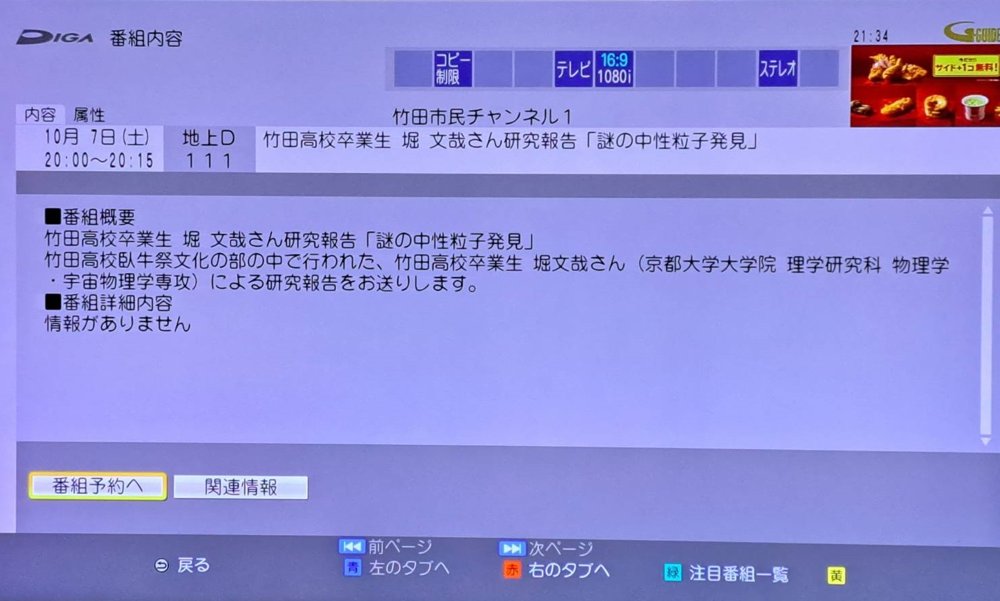

Publications/Presentations
私の論文リストや発表リスト、今後の発表予定などを掲載しています。受賞歴や受け入れ研究基金等も載せています。研究の内容や成果についてはこちらでも紹介しています。
・論文リスト (Publications)
・発表リスト (Presentations)
国際学会での研究発表 (International Conferences)
国内学会での研究発表 (Domestic Conferernces)
・受賞歴 (Award)
・受け入れ研究資金等 (Grants)
・解説記事 (Explanatory article)
・プレスリリース (Press release)
・新聞・Web報道等 (Newspaper, web report)
・教育活動 (Educational activity)
・その他アウトリーチ (Outreach activity)
論文リスト
(Publications)-
Y. Sakai, F. Hori, H. Matsumura, S. Oguchi, S. Kitagawa, K. Ishida, and H. Tanida
"Microscopic Determination of the c-axis-Oriented Antiferromagnetic Structure in LaMnSi by 55Mn and 139La NMR"


J. Phys. Soc. Jpn. 95, 024702 (2026); arXiv:2601.20281.
固体量子さんによるYouTube解説
F. Hori, H. Matsudaira, S. Kitagawa, K. Ishida, S. Mizutani, H. Shirai, and T. Onimaru
"Lu/Se Substitution Effect on Magnetic Properties of Yb-Based Zigzag Chain Semiconductor YbCuS2"
Phys. Rev. B 112, 064414 (2025); arXiv:2412.18373.
F. Hori, H. Matsudaira, S. Kitagawa, K. Ishida, H. Suzuki, and T. Onimaru
"Pressure evolution of magnetic structure and quasiparticle excitations in anisotropic frustrated zigzag chains"
Commun. Mater. 6, 170 (2025); arXiv:2412.17575.
京都大学学術情報リポジトリ（KURENAI）,
京都大学プレスリリース, 固体量子さんによるYouTube解説,
日本経済新聞
S. Kitagawa, F. Hori, K. Ishida, R. Oishi, Y. Shimura, T. Onimaru, and T. Takabatake
"Antiferromagnetic Order and Magnetic Frustration in the Honeycomb Heavy-Fermion System Ce(Pt$_{1-x}$Pd$_x$)6Al3: 27Al and 195Pt NMR Studies"
J. Phys. Soc. Jpn. 94, 094702 (2025); arXiv:2507.22532.
京都大学学術情報リポジトリ（KURENAI）
Top 20 Most Downloaded Articles -- August 2025
F. Hori, S. Kitagawa, K. Ishida, Y. Ohmagari, and T. Onimaru
"Magnetic-Field Dependence of Paramagnetic Properties Investigated by 63/65Cu-NMR on the Yb Zigzag-Chain Semiconductor YbCuS2"
J. Phys. Soc. Jpn. 94, 024706 (2025); arXiv:2502.00830.
Top 20 Most Downloaded Articles -- February 2025
F. Hori, S. Kitagawa, K. Ishida, S. Mizutani, Y. Ohmagari, and T. Onimaru
"Gapped Spin Excitation in Magnetic Ordered State on Yb-Based Zigzag Chain Compound YbAgSe2"
J. Phys. Soc. Jpn. 93, 114702 (2024); arXiv:2411.09325.
Top 20 Most Downloaded Articles -- October 2024
Top 20 Most Downloaded Articles -- November 2024
K. Kinjo, H. Fujibayashi, H. Matsumura, F. Hori, S. Kitagawa, K. Ishida., Y. Tokunaga, H. Sakai, S. Kambe, A. Nakamura, Y. Shimizu, Y. Homma, D. Li, F. Honda, and D. Aoki
"Superconducting spin reorientation in spin-triplet multiple superconducting phases of UTe2"
Sci. Adv. 9, eadg2736 (2023); arXiv:2307.15784.
京都大学学術情報リポジトリ（KURENAI）,
京都大学プレスリリース
F. Hori, K. Kinjo, S. Kitagawa, K. Ishida, S. Mizutani, R. Yamamoto, Y. Ohmagari, and T. Onimaru
"Gapless fermionic excitation in the antiferromagnetic state of ytterbium zigzag chain"
Commun. Mater. 4, 55 (2023); arXiv:2201.07563.
京都大学学術情報リポジトリ（KURENAI）,
京都大学プレスリリース, Yahoo!ニュース
S. Kitagawa, T. Kobayashi, F. Hori, K. Ishida, A. H. Nevidomskyy, L. Qian, and E. Morosan
"Enhancement of charge-neutral fermionic excitations near the spin-flop transition in the magnetic Kondo material YbIr3Si7"
Phys. Rev. B 106, L100405 (2022); arXiv:2209.10844.
京都大学学術情報リポジトリ（KURENAI）
F. Hori, K. Kinjo, S. Kitagawa, K. Ishida, Y. Ohmagari, and T. Onimaru
"Impurity-Robust Bulk Gapless Excitation in the Yb-Based Zigzag Chain Compound YbCuS2"
J. Phys.: Conf. Ser. 2164, 012027 (2022).
発表リスト(自分が講演したもの中心)
(Presentations)〇今後の発表予定
お楽しみに！！！
〇発表済み
国際学会での研究発表
(International Conferences)
F. Hori, H. Matsudaira, S. Kitagawa, K. Ishida, S. Mizutani, H. Shirai, H. Suzuki, and T. Onimaru
"Pressure Evolution of Magnetic Structures and Quasiparticle Excitations in the Frustrated Zigzag-Chain Compound YbCuS2 "
International Conference on Strongly Correlated Electron Systems 2025 (SCES 2025), 253-EcQ8-252, Montréal, Canada, July 7, 2025 (Oral)
F. Hori
"Emergent charge-neutral quasiparticle in the 4f antiferromagnetic zigzag chain"
KUJI QMAT Seminar #42, Cambridge, Kyoto, Seoul, and Salerno; Online, Aug 22, 2024 (Oral; Invited talk )
F. Hori, H. Matsudaira, S. Kitagawa, K. Ishida, H. Shirai, S. Mizutani, H. Suzuki, Y. Ohmagari and T. Onimaru
"Evolution of Magnetic Properties in Yb Zigzag Chain Semiconductor YbCuS2 under Varied Conditions: Substitution, Pressure, and Magnetic Field"
International Conference on Magnetism 2024 (ICM 2024), #ICM2024_1.04_1206, Bologna, Italy, July 2, 2024 (Poster)
Best Poster Award 受賞

F. Hori
"Charge-neutral quasiparticles in a 4f zigzag-chain semiconductor YbCuS2"
H-Physics Workshop: Topology, spin-orbit interactions and superconductivity in strongly correlated quantum materials under extreme conditions, B4,
Grenoble, France, Oct 11-12, 2023 (Poster)
F. Hori, S. Kitagawa, K. Ishida, H. Shirai, S. Mizutani, and T. Onimaru
"Lu, Se substitution effect on ordered state and magnetic excitation in a Yb zigzag chain semiconductor YbCuS2"
International Conference on Strongly Correlated Electron Systems 2023 (SCES 2023), 10-0354,
Incheon, Korea, Jul 5, 2023（Poster）
K. Kinjo, H. Fujibayashi, H. Matsumura, F. Hori, S. Kitagawa, K. Ishida., Y. Tokunaga, H. Sakai, S. Kambe, A. Nakamura, Y. Shimizu, Y. Homma, D. Li, F. Honda, and D. Aoki
"NMR Study on Multiple Superconducting Phases of UTe2 under Pressure"
International Conference on Strongly Correlated Electron Systems 2023 (SCES 2023), 8-0460,
Incheon, Korea, Jul 4, 2023（Poster）
F. Hori
"Metallic-like Excitation in the Antiferromagnetic State of a Yb Zigzag Chain Semiconductor"
International Symposium on Creation of Advanced Photonic and Electronic Devices 2023 /
International Symposium on Advanced Quantum Technology for Future 2023, P-43,
Kyoto Univ., Japan, Mar 14, 2023（Poster）
F. Hori
"Low-temperature magnetic state in Yb-based semiconductors with a zigzag-chain structure"
International Seminar Dojo 2022 / Workshop for Advanced Quantum Technology for Future 2022, L-5,
Kyoto Univ., Japan, Sep 30, 2022（Poster）
F. Hori, K. Kinjo, S. Kitagawa, K. Ishida, S. Mizutani, Y. Ohmagari, and T. Onimaru
"Magnetic ground state in semiconducting Yb-based compounds
with a zigzag-chain structure"
International Conference on Strongly Correlated Electron Systems 2022 (SCES 2022), 70,
Amsterdam, The Netherlands, Jul 24-29, 2022（Poster）
F. Hori, K. Kinjo, S. Kitagawa, K. Ishida, Y. Ohmagari, and T. Onimaru
"Metallic-like excitation in the frustrated semiconductor YbCuS2"
Oxide Superspin 2021 (OSS2021) workshop, P8, Kyoto, Japan, Dec 13-17, 2021（Poster）
Bronze Award For the Best Poster Presentation 受賞

F. Hori, K. Kinjo, S. Kitagawa, K. Ishida, Y. Ohmagari, and T. Onimaru
"Unkown Gapless Excitation in Antiferromagnetic State
of Yb Zigzag Chain System YbCuS2"
International Conference on Strongly Correlated Electrons Systems 2020 (SCES 2020), 141343,
São Paulo, Brazil; Online, Sep 27-Oct 02, 2021（Poster）
国内学会での研究発表
(Domestic Conferernces)
堀文哉, 松平広康, 北川俊作, 石田憲二, 鈴木大斗, 鬼丸孝博
"異方的フラストレートジグザグ鎖化合物YbCuS2の磁気構造と準粒子励起"
第35回日本MRS年次大会, A2-O10-009, 北九州国際会議場, 2025年11月10日（口頭発表）
堀文哉, 北川俊作, 石田憲二, 大曲雄大, 鬼丸孝博
"Cu-NMRから観るYbジグザグ鎖半導体YbCuS2の磁気ゆらぎの研究"
日本物理学会 第80回年次大会, 18pSK313-13, 広島大学, 2025年9月18日（口頭発表）
堀文哉
"フラストレーションを内包する希土類化合物YbCuS2の磁気構造と準粒子励起"
第1回「相関設計」若手コロキウム, オンライン開催, 2025年6月20日（口頭発表）
酒井佑輔, 堀文哉, 松村拓輝, 大口峻平, 北川俊作, 石田憲二, 谷田博司
"55Mn/139La-NMRを用いた奇パリティ反強磁性体LaMnSiの基礎物性の解明"
日本物理学会 2025年春季大会, 20pH1-2, オンライン開催, 2025年3月20日（口頭発表）
堀文哉, 金城克樹, 松平広康, 北川俊作, 石田憲二, 大曲雄大, 白井宏尚, 水谷宗一郎, 鈴木大斗, 鬼丸孝博
"Ybジグザグ鎖をもつYbCuS2で現れる電気的中性な準粒子"
第19回低温物質科学講演会・研究交流会, P42, 京都大学, 2025年2月20日（ポスター発表）
酒井佑輔, 堀文哉, 松村拓輝, 大口峻平, 北川俊作, 石田憲二, 谷田博司
"NMRで観る奇パリティ反強磁性LaMnSiの低温物性"
第19回低温物質科学講演会・研究交流会, P37, 京都大学, 2025年2月20日（ポスター発表）
堀文哉, 松平広康, 北川俊作, 石田憲二, 白井宏尚, 水谷宗一郎, 鈴木大斗, 鬼丸孝博
"Ybジグザグ鎖をもつYbCuS2の磁気構造と準粒子励起の圧力変化"
「アシンメトリ量子」トピカルミーティング「精密計測×アシンメトリ量子物質：アシンメトリ量子物性の深化に向けて」, 8, 茨城県東海村, 2025年2月10日（ポスター発表）
酒井佑輔, 尾方 司貴, 堀文哉, 北川俊作, 石田憲二, 青山拓也, 大串研也, 谷田 博司
"奇パリティ多極子物質BaMn2As2/LaMnSiにおける55Mn-NMR測定と電流誘起歪み検出の可能性"
「アシンメトリ量子」トピカルミーティング「アシンメトリ量子物質における交差相関の開拓」, 23, 神戸大学, 2024年12月6日（ポスター発表）
大口峻平, 尾方司貴, 堀文哉, 北川俊作, 石田憲二, 冨田光太郎, 渡邉寛大, 志村恭通, 鬼丸孝博
"重い電子系物質YbCu4Niを用いた断熱消磁冷凍プローブの作成"
日本物理学会 第79回年次大会, 18pPSB-105, 北海道大学, 2024年9月18日（ポスター発表）
酒井佑輔, 尾方司貴, 堀文哉, 北川俊作, 石田憲二, 青山拓也, 大串研也
"55Mn-NMRを用いた奇パリティ多極子物質BaMn2As2における電流誘起歪みの探索"
日本物理学会 第79回年次大会, 18pE307-2, 北海道大学, 2024年9月18日（口頭発表）
堀文哉, 松平広康, 北川俊作, 石田憲二, 鈴木大斗, 鬼丸孝博
"Cu-NQRから観るYbジグザグ鎖半導体YbCuS2の圧力効果"
日本物理学会 第79回年次大会, 17aS105-10, 北海道大学, 2024年9月17日（口頭発表）
井原大志, 堀文哉, 北川俊作, 石田憲二, 草田康平, 北川宏
"金属ナノ粒子における量子サイズ効果への磁性元素置換効果"
日本物理学会 第79回年次大会, 17aE319-3, 北海道大学, 2024年9月17日（口頭発表）
堀文哉, 松平広康, 北川俊作, 石田憲二, 白井宏尚, 水谷宗一郎, 鈴木大斗, 鬼丸孝博
"Ybジグザグ鎖半導体YbCuS2における種々のparameter tuningに対するgapless状態の応答"
H-Physics II「対称性と物理現象-その発現と制御」, 16, 神戸大学, 2024年6月14日（ポスター発表）
堀文哉, 松平広康, 北川俊作, 石田憲二, 白井宏尚, 水谷宗一郎, 鈴木大斗, 鬼丸孝博
"Ybジグザグ鎖半導体YbCuS2における新奇準粒子の圧力効果・元素置換効果"
「アシンメトリ量子」令和６年度 領域全体会議・公募研究キックオフ会議, No. 5, 東広島芸術文化ホール, 2024年5月30日（ポスター発表）
優秀ポスター賞受賞

酒井葵生，堀文哉, 北川俊作, 石田憲二, 石川孟, 金道浩一
"ハニカム構造を持つ層状5d電子系超伝導体La2IOs2の139La-NMR測定"
日本物理学会 2024年春季大会, 20pH1-10, オンライン開催, 2024年3月20日（口頭発表）
堀文哉, 金城克樹, 松平広康, 北川俊作, 石田憲二, 大曲雄大, 白井宏尚, 水谷宗一郎, 鬼丸孝博
"Ybジグザグ鎖半導体YbCuS2における新奇準粒子の発見"
日本物理学会 2024年春季大会, 19aH1-10, 東北大学, オンライン開催, 2024年3月19日（口頭発表）
日本物理学会学生優秀発表賞（領域8）受賞


堀文哉, 松平広康, 北川俊作, 石田憲二, 白井宏尚, 水谷宗一郎, 鈴木大斗, 大曲雄大, 鬼丸孝博
"Ybジグザグ鎖半導体YbCuS2における50 K異常の考察"
「アシンメトリ量子」トピカルミーティング「アシンメトリ量子物質の開発〜現状と展望〜」, P10,
九州工業大学, 2024年1月5日（ポスター発表）
堀文哉, 松平広康, 北川俊作, 石田憲二, 白井宏尚, 水谷宗一郎, 鬼丸孝博
"Cu-NQRから観るYbジグザグ鎖半導体YbCuS2のLu, Se置換効果"
日本物理学会 第78回年次大会, 18pB103-2, 東北大学, 2023年9月18日（口頭発表）
松平広康, 堀文哉, 北川俊作, 石田憲二, Y. Singh, A. Thamizhavel
"重い電子系反強磁性体Yb2Fe3Si5のNMR"
日本物理学会 第78回年次大会, 17pA205-2, 東北大学, 2023年9月17日（口頭発表）
井原大志, 堀文哉, 北川俊作, 石田憲二, 草田康平, 北川宏
"Pt-Niナノ粒子のNMR測定"
日本物理学会 第78回年次大会, 16aPS-13, 東北大学, 2023年9月16日（ポスター発表）
堀文哉, 松平広康, 北川俊作, 石田憲二, 白井宏尚, 水谷宗一郎, 鬼丸孝博
"Ybジグザグ鎖半導体YbCuS2の磁気特性の置換効果"
「アシンメトリ量子」トピカルミーティング「アシンメトリ量子物質を如何に可視化するか？～ミクロ測定とマクロ測定の連携による研究戦略～」, P26, 北海道大学, 2023年8月30日（ポスター発表）
堀文哉, 金城克樹, 北川俊作, 石田憲二, 水谷宗一郎, 大曲雄大, 山本理香子, 鬼丸孝博
"4fジグザグ鎖半導体YbCuS2における電気的中性な準粒子"
「アシンメトリ量子」キックオフミーティング, P61, 岡山大学, 2023年6月11日（ポスター発表）
優秀ポスター賞受賞

堀文哉, 北川俊作, 石田憲二, 白井宏尚, 水谷宗一郎, 鬼丸孝博
"Cu-NQRを用いたYbジグザグ鎖半導体YbCuS2におけるLu置換効果の研究"
日本物理学会 2023年春季大会, 25aC1-3, オンライン開催, 2023年3月25日（口頭発表）
堀文哉, 北川俊作, 石田憲二, 水谷宗一郎, 大曲雄大, 鬼丸孝博
"Ybジグザグ鎖半導体YbAgSe2における低温秩序相のNMR測定"
日本物理学会 2022年秋季大会, 15aW631-9, 東京工業大学, 2022年9月15日（口頭発表）
堀文哉, 金城克樹, 北川俊作, 石田憲二, 水谷宗一郎, 大曲雄大, 鬼丸孝博
"Ybジグザグ鎖半導体YbCuS2/YbAgSe2のNMR"
日本物理学会 第77回年次大会, 15pGB11-9, オンライン開催, 2022年3月15日（口頭発表）
北川俊作, 小林琢実, 堀文哉, 石田憲二, 佐藤雄貴, 末次祥大, 松田祐司, L. Qian, J. M. Moya, E. Morosan
"反強磁性近藤絶縁体YbIr3Si7における低エネルギー磁気励起の磁場変化"
日本物理学会 2021年秋季大会, 23aH2-7, オンライン開催, 2021年9月23日（口頭発表）
堀文哉, 北川俊作, 石田憲二, 大石遼平, 鬼丸孝博, 高畠敏郎
"NMRを用いたハニカム近藤格子化合物CePt6Al3におけるPd置換効果の研究"
日本物理学会 2021年秋季大会, 22aH3-8, オンライン開催, 2021年9月22日（口頭発表）
堀文哉, 金城克樹, 北川俊作, 石田憲二, 大曲雄大, 鬼丸孝博
"Ybジグザグ鎖をもつYbCuS2における低温秩序相のNQR測定"
日本物理学会 第76回年次大会, 14aH3-9, オンライン開催, 2021年3月14日 （口頭発表）
堀文哉, 金城克樹, 北川俊作, 石田憲二, 大曲雄大, 鬼丸孝博
"希土類カルコゲナイドYbCuS2のCu-NMR/NQR"
日本物理学会 2020年秋季大会, PSH-63, オンライン開催, 2020年9月8日～11日（ポスター発表）
受賞歴
(Award)受け入れ研究資金等
(Grants)-
◆2025年~2027年 科学研究費助成事業 研究活動スタート支援「非周期性をもつ準結晶に潜在する高次磁気多極子の検出」研究者代表者：課題番号 JP25K23348
◆2025年~2026年 若手研究者アンサンブルグラント「⾦属磁性体の新物質開発と新奇量⼦相の開拓」共同研究者（研究代表者: 金城克樹）
◆2025年 望月基金（国際会議派遣）
◆2023年~2025年 科学研究費助成事業 特別研究員奨励費「フラストレーションを内在する希土類化合物に見られた中性フェルミオンの解明」研究者代表者：課題番号 JP23KJ1247
◆2022年 京都大学「未来を創る先端量子技術フェローシップ」インターンシップ補助金「希土類ジグザグ鎖における新奇磁気励起の解明」
◆2022年~2023年 京都大学「未来を創る先端量子技術フェローシップ」研究費「フラストレーションを内在する希土類磁性化合物における新奇現象の探索」
解説記事
(Explanatory article)-
堀文哉, 北川俊作, 石田憲二
"フラストレーションを内包する希土類化合物YbCuS2で現れる電気的中性な準粒子"
京都大学低温物質科学 45, 3 (2025).
京都大学学術情報リポジトリ（KURENAI） プレスリリース
(Press release)-
◆2025.08.07 「異方的量子スピンジグザグ鎖モデルの予測を実験的に実証ー新たな物質機能性の実現が期待ー」（京都大学、広島大学、東北大学ホームページ）
◆2023.08.01 「スピン自由度を持つ超伝導の実験的同定－スピン三重項超伝導多重相における新現象－」(京都大学ホームページ)
◆2023.07.28 「ジグザグ鎖構造をもつ磁性体で現れる電気的中性な準粒子の発見」（京都大学、広島大学ホームページ）
新聞・Web報道等
(Newspaper, web report)-
◆2025.08.07 「京大・広島大・東北大、異方的量子スピンジグザグ鎖モデルの予測を実験的に実証」（日本経済新聞）
◆2023.08.01 「京大ら、イッテルビウム化合物で中性準粒子を発見」（Yahoo!ニュース、EE Times Japan）
教育活動
(Educational activity)-
◆2025年度後期 東北大学「物理学実験I」課題2「電磁誘導」
◆2025年度前期 東北大学「自然科学総合実験」課題7「光のスペクトル」
その他アウトリーチ
(Outreach activity)-
◆2025.07.30 東北大学オープンキャンパスに研究室として参加しました。「磁気の世界・極低温の世界」のデモ実験を行いました。
◆2024.10.02 広島市立向洋新町小学校6年生の総合的な学習の時間の講師として参加して、キャリア教育「研究職って何？」の授業を行いました。大学で研究をするという仕事があり、自分の好きなことや興味を追求することが仕事につながることについてお話しました。


◆2024.08.09 京都大学オープンキャンパスに研究室として参加しました。「魅せる超伝導」のデモ実験を行いました。
◆2024.04.18
「低温科学A」の講義で行った超伝導デモ実験のお手伝いをしました。今年からゼロ抵抗測定には、LabVIEWではなく自動化対応測定プログラムKAMEを用いました。◆2023.12.15
洛南高等学校・同附属中学校 京大講演会の終了後、低温のデモ実験のお手伝いをしました。◆2023.09.07 母校である竹田高校の臥牛祭 文化の部にて卒業生研究成果報告を行いました。研究報告について2023年9月10日の大分合同新聞で取り上げられました。さらに、研究報告の様子が2023年10月7日から2023年11月5日までの間、たけたケーブルテレビで放送されました。
◆2023.05.24
Lorentz Festival（ローレンツ祭） 2023で研究紹介、オープンラボを行いました。今年は対面開催が基本となりましたので、超伝導デモ実験を行いました。◆2023.04.20
「低温科学A」の講義で行った超伝導デモ実験のお手伝いをしました。◆2022.05.13
Lorentz Festival（ローレンツ祭） 2022で研究紹介、オープンラボを行いました。◆2022.04.21
「低温科学A」の講義で行った超伝導デモ実験のお手伝いをしました。◆2021.05.15
Lorentz Festival（ローレンツ祭） 2021で研究紹介、オープンラボを行いました。◆2021.04.15
「低温科学A」の講義で行った超伝導デモ実験のお手伝いをしました。◆2020.10.24
京都大学『えるきゃす』オンライン2020の技術業務の補佐として参加しました。
◆2017年4月
理学部成績優秀者認定証
（広島大学理学部）

◆2019年4月
理学部成績優秀者認定証
（広島大学理学部）

◆2021年12月
Bronze Award For the Best Poster Presentation
（Oxide Superspin 2021 workshop）
◆2022年6月
特に優れた業績による返還免除の認定証
（日本学生支援機構）

◆2023年6月
優秀ポスター賞
（「アシンメトリ量子」キックオフミーティング）
◆2023年6月
特に優れた業績による返還免除の認定証
（日本学生支援機構）

◆2023年9月
研究者特別表彰
（里見奨学会）

◆2024年3月
日本物理学会学生優秀発表賞（領域8）
（日本物理学会 2024年春季大会）
◆2024年5月
優秀ポスター賞
（「アシンメトリ量子」令和６年度 領域全体会議・公募研究キックオフ会議）
◆2024年7月
Best Poster Award
（International Conference on Magnetism 2024）
- © 2021 Fumiya HORI
- This page has been built with the aid of HTML5 UP